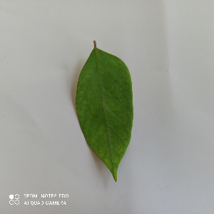

Ekstraksi Fitur Warna dan GLCM
Ekstraksi Fitur Warna dan GLCM#
import library yang akan digunakan
import cv2
import numpy as np
from google.colab.patches import cv2_imshow
import matplotlib.pyplot as plt
import glob
import pandas as pd
from google.colab import drive
drive.mount('/content/drive')
KeyboardInterruptTraceback (most recent call last)
<ipython-input-2-d5df0069828e> in <module>
1 from google.colab import drive
----> 2 drive.mount('/content/drive')
/usr/local/lib/python3.8/dist-packages/google/colab/drive.py in mount(mountpoint, force_remount, timeout_ms, readonly)
99 def mount(mountpoint, force_remount=False, timeout_ms=120000, readonly=False):
100 """Mount your Google Drive at the specified mountpoint path."""
--> 101 return _mount(
102 mountpoint,
103 force_remount=force_remount,
/usr/local/lib/python3.8/dist-packages/google/colab/drive.py in _mount(mountpoint, force_remount, timeout_ms, ephemeral, readonly)
122 'TBE_EPHEM_CREDS_ADDR'] if ephemeral else _os.environ['TBE_CREDS_ADDR']
123 if ephemeral:
--> 124 _message.blocking_request(
125 'request_auth', request={'authType': 'dfs_ephemeral'}, timeout_sec=None)
126
/usr/local/lib/python3.8/dist-packages/google/colab/_message.py in blocking_request(request_type, request, timeout_sec, parent)
169 request_id = send_request(
170 request_type, request, parent=parent, expect_reply=True)
--> 171 return read_reply_from_input(request_id, timeout_sec)
/usr/local/lib/python3.8/dist-packages/google/colab/_message.py in read_reply_from_input(message_id, timeout_sec)
95 reply = _read_next_input_message()
96 if reply == _NOT_READY or not isinstance(reply, dict):
---> 97 time.sleep(0.025)
98 continue
99 if (reply.get('type') == 'colab_reply' and
KeyboardInterrupt:
Siapkan file gamabr yang akan diolah, kemudian resize gambar agar proses lebih ringan.
image = cv2.imread('/content/drive/MyDrive/Daun Sehat/IMG_20220903_103536_1.jpg')
image = cv2.resize(image,(300,300))
Konveri RGB ==> CMYK
img = image.astype(np.float64)/255.
K = 1 - np.max(img, axis=2)
C = (1-img[...,2] - K)/(1-K) #(1-R-K)/(1-k)
M = (1-img[...,1] - K)/(1-K) # (1-G-K)/(1-k)
Y = (1-img[...,0] - K)/(1-K) #(1-B-K)/(1-k)
CMYK_image= (np.dstack((C,M,Y,K)) * 255).astype(np.uint8)
cv2_imshow(image)

cv2_imshow(CMYK_image)
Konveri RGB ==> ycbcr
cbcr = np.empty_like(image) #membuat array unitialized yang ukurannya sama dengan image
r = image[:,:,2]
g = image[:,:,1]
b = image[:,:,0]
# Y
cbcr[:,:,0] = .299 * r + .587 * g + .114 * b
# Cb
cbcr[:,:,1] = 128 - .169 * r - .331 * g + .5 * b
# Cr
cbcr[:,:,2] = 128 + .5 * r - .419 * g - .081 * b
hasil_ycbcr= np.uint8(cbcr)
cv2_imshow(hasil_ycbcr)
Fuction Konversi RGB ==> BGR
def rgb(image_file,x,y):
global B
global G
global R
B,G,R = image_file[x,y]
return B,G,R
Fuction Konversi RGB ==> CMYK
def cmyk(image_file,x,y):
global C
global M
global Y
global K
img = image_file.astype(np.float64)/255.
K = 1 - np.max(img, axis=2)
C = (1-img[...,2] - K)/(1-K) #(1-R-K)/(1-k)
M = (1-img[...,1] - K)/(1-K) # (1-G-K)/(1-k)
Y = (1-img[...,0] - K)/(1-K) #(1-B-K)/(1-k)
CMYK_image= (np.dstack((C,M,Y,K)) * 255).astype(np.uint8)
C,M,Y,K = CMYK_image[x,y]
return C,M,Y,K
Fuction Konversi RGB ==> YCbCr
def ycbcr(image_file,x,y):
global Y
global Cb
global Cr
cbcr = np.empty_like(image_file) #membuat array unitialized yang ukurannya sama dengan image
r = image_file[:,:,0]
g = image_file[:,:,1]
b = image_file[:,:,2]
# Y
cbcr[:,:,0] = .299 * r + .587 * g + .114 * b
# Cb
cbcr[:,:,1] = 128 - .169 * r - .331 * g + .5 * b
# Cr
cbcr[:,:,2] = 128 + .5 * r - .419 * g - .081 * b
ycbcr_image= np.uint8(cbcr)
Y,Cb,Cr = ycbcr_image[x,y]
return Y,Cb,Cr
Function GLCM
from skimage.feature import greycomatrix, greycoprops
def calc_glcm_all_agls(img,props, dists=[5], agls=[0, np.pi/4, np.pi/2, 3*np.pi/4], lvl=256, sym=True, norm=True):
glcm = greycomatrix(img,
distances=dists,
angles=agls,
levels=lvl,
symmetric=sym,
normed=norm)
feature = []
glcm_props = [propery for name in props for propery in greycoprops(glcm, name)[0]]
for item in glcm_props:
feature.append(item)
# feature.append(label)
return feature
Data 1000 citra yang akan diolah
images_path = glob.glob('/content/drive/MyDrive/Daun Sehat/*.jpg')
imgs = [] #list image matrix
# labels = []
# descs = []
for image in images_path:
img = cv2.imread(image)
gray = cv2.cvtColor(img, cv2.COLOR_BGR2GRAY)
h, w = gray.shape
ymin, ymax, xmin, xmax = h//3, h*2//3, w//3, w*2//3
crop = gray[ymin:ymax, xmin:xmax]
resize = cv2.resize(crop, (0,0), fx=0.5, fy=0.5)
imgs.append(resize)
# labels.append(normalize_label(os.path.splitext(filename)[0]))
# descs.append(normalize_desc(folder, sub_folder))
# print_progress(i, len_sub_folder, folder, sub_folder, filename)
properties = ['dissimilarity', 'correlation', 'homogeneity', 'contrast', 'ASM', 'energy']
glcm_all_agls = []
for img in imgs:
glcm_all_agls.append(
calc_glcm_all_agls(img,
props=properties)
)
columns = []
angles = ['0', '45', '90','135']
for name in properties :
for ang in angles:
columns.append(name + "_" + ang)
import pandas as pd
# Create the pandas DataFrame for GLCM features data
glcm_df = pd.DataFrame(glcm_all_agls,
columns = columns)
glcm_df.head(5)
| dissimilarity_0 | dissimilarity_45 | dissimilarity_90 | dissimilarity_135 | correlation_0 | correlation_45 | correlation_90 | correlation_135 | homogeneity_0 | homogeneity_45 | ... | contrast_90 | contrast_135 | ASM_0 | ASM_45 | ASM_90 | ASM_135 | energy_0 | energy_45 | energy_90 | energy_135 | |
|---|---|---|---|---|---|---|---|---|---|---|---|---|---|---|---|---|---|---|---|---|---|
| 0 | 1.997763 | 2.194891 | 1.808297 | 1.776773 | 0.990949 | 0.986506 | 0.992701 | 0.994676 | 0.522625 | 0.518820 | ... | 16.403344 | 11.964829 | 0.008983 | 0.008874 | 0.009268 | 0.009112 | 0.094776 | 0.094202 | 0.096268 | 0.095455 |
| 1 | 2.626080 | 3.662115 | 3.796002 | 3.373602 | 0.989787 | 0.968802 | 0.969215 | 0.981664 | 0.381453 | 0.340519 | ... | 61.290932 | 36.522342 | 0.002427 | 0.002209 | 0.002164 | 0.002161 | 0.049264 | 0.047000 | 0.046522 | 0.046484 |
| 2 | 1.693095 | 2.059000 | 1.850130 | 1.662637 | 0.992050 | 0.982639 | 0.986879 | 0.993240 | 0.547220 | 0.539432 | ... | 24.892202 | 12.846104 | 0.012568 | 0.012506 | 0.012782 | 0.012475 | 0.112106 | 0.111828 | 0.113057 | 0.111693 |
| 3 | 2.913229 | 3.845160 | 3.841522 | 3.662610 | 0.984392 | 0.960353 | 0.959781 | 0.971291 | 0.348564 | 0.301426 | ... | 57.913890 | 41.368203 | 0.001753 | 0.001558 | 0.001578 | 0.001525 | 0.041863 | 0.039477 | 0.039723 | 0.039053 |
| 4 | 3.374614 | 2.508732 | 2.612106 | 3.754544 | 0.980451 | 0.991017 | 0.990094 | 0.976024 | 0.353225 | 0.402314 | ... | 18.894473 | 45.508341 | 0.002670 | 0.002878 | 0.002962 | 0.002550 | 0.051676 | 0.053650 | 0.054429 | 0.050500 |
5 rows × 24 columns
%cd /content/drive/MyDrive/Pengolahan_Citra
/content/drive/MyDrive/Pengolahan_Citra
# determining the name of the file
file_name = 'GLCM.xlsx'
# saving the excel
glcm_df.to_excel(file_name)
print('DataFrame is written to Excel File successfully.')
DataFrame is written to Excel File successfully.
writer = pd.ExcelWriter('Hasil_warna.xlsx')
#1000 image
index = 0
img_ke = 1
tabel_hasil = []
kolom = ["Image","R", "G", "B", "C", "M","Y","K", "Y", "Cb", "Cr"]
tabel_hasil.append(kolom)
for image in images_path:
image = cv2.imread(image)
image = cv2.resize(image,(200,300))
rgb(image,100,100)
cmyk(image,100,100)
ycbcr(image,100,100)
tabel_baris = [
img_ke,
R,
G,
B,
C,
M,
Y,
K,
Y,
Cb,
Cr
]
index+=1
img_ke+=1
tabel_hasil.append(tabel_baris)
tabel_hasil = pd.DataFrame(tabel_hasil)
tabel_hasil.to_excel(writer, sheet_name="RGB-CMYK")
writer.save()